Howdy! I'm Umberto Cappellazzo, and I work as a Research Associate in the Department of Computing at Imperial College London, UK. I'm a member of the iBUG group led by Maja Pantic and am fortunate to be advised by Stavros Petridis. My research focuses on the parameter-efficient massive scaling of audio-visual models using Mixture of Experts and Large Language Models. Previously, I obtained my PhD in Information Engineering and Computer Science from the University of Trento, Italy. During my PhD, I explored diverse topics, including continual learning for speech processing, parameter-efficient fine-tuning techniques (e.g, adapters, LoRA) for audio/speech tasks, and Multimodal LLMs for audio-visual speech recognition, leading to nine publications in top-notch conferences. During the final year of my PhD, I spent nine months as a visiting researcher with the iBUG team at Imperial.
News
- 19/09/2025. I'm super excited to share that our paper "MoME: Mixture of Matryoshka Experts for Audio-Visual Speech Recognition" has been accepted to NeurIPS 2025! The camera-ready version is available here. We introduce Mixture of Matryoshka Experts (MoME), which unifies Matryoshka Representation Learning with sparse Mixture-of-Experts for AVSR. MoME augments frozen LLMs with top-k routed and shared experts, enabling dynamic capacity allocation across modalities and granularities while capturing global, cross-modal, and scale-invariant knowledge.
- 07/08/2025. Delighted to announce that our paper "Adaptive Audio-Visual Speech Recognition via Matryoshka-Based Multimodal LLMs" has been accepted to IEEE ASRU 2025! The camera-ready version is available here. One model, elastic inference, and strong performance across multiple tasks via parameter-efficient matryoshka representation learning. I'll be sharing further details in Honolulu, Hawaii this December! 🌺
- 22/05/2025. Super happy to share that our paper "Scaling and Enhancing LLM-based AVSR: A Sparse Mixture of Projectors Approach" has been accepted at Interspeech 2025!! The camera-ready version is available here. We show how to effectively apply Mixture of Experts (MoE) to the projector layers for LLM-based AVSR (i.e., Llama-SMoP). Simple, efficient, and model-agnostic, yay! Looking forward to sharing more details in Rotterdam this August!
- 11/03/2025. I'm stoked to announce that I've joined the Department of Computing at Imperial College London with the iBUG team (led by Maja Pantic) as a research associate. I'm fortunate to be advised by Stavros Petridis. My research focus is on the efficient scaling of audio-visual models via Mixture of Experts and LLMs. Ad maiora!
- 15/01/2025. Extremely proud and happy to announce that on January 15, 2025 I successfully defended my PhD "cum laude" at the University of Trento, Italy. What an incredible journey my 3-year PhD has been, full of experiences, collaborations, and achievements. If interested, here you can read my final PhD dissertation, where here you can have access to my PhD Defense slides.
- 20/12/2024. Delighted to announce that our paper "Large Language Models are Strong Audio-Visual Speech Recognition Learners" has been accepted at ICASSP 2025. The camera-ready version will be uploaded here soon.
- 28/09/2024. Introducing Llama-AVSR, a multimodal LLM with strong audio-visual speech recognition capabilities. We attain new state-of-the-art results on the LRS3 benchmark, the largest public AVSR benchmark, for the tasks of ASR and AVSR, and sota results for the task of VSR. We also unveil the key factors that lead to the effectiveness of Llama-AVSR: the choice of the pre-trained encoders and LLMs, the use of LoRA modules and how to achieve the optimal performance-efficiency trade-off via modality-aware compression rates. This work has been done while visiting Imperial College London 🇬🇧 in collaboration with Meta AI. More details about the pre-print here.
- 16/07/2024. Excited to share that my paper Parameter-Efficient Transfer Learning of Audio Spectrogram Transformers has been accepted at the IEEE International Workshop on Machine Learning for Signal Processing (MLSP) 2024. The workshop will take place in September 22-25, 2024 at Imperial College London, London, UK. The paper investigates the efficient fine-tuning of the Audio Spectrogram Transformer model to multiple audio and speech tasks. We take into account various PEFT methods like bottleneck adapter, prompt-tuning, and LoRA. Furthermore, we propose a new adapter module that leverages the convolution module of the conformer architecture. Our experiments reveal that our conformer adapter outstrips the other PEFT methods and is able to surpass or achieve performance parity with full fine-tuning by updating only 0.29% of the parameters. We also show that 1) the conformer adapter is effective in few-shot efficient transfer learning, 2) attains optimal results regardless of the amount of the allocated parameters, and 3) can be applied to other pre-trained models like Wav2Vec 2.0.
- 04/06/2024. So glad to announce the recent acceptance of three papers of mine 🚀 🚀 🚀! 1) "Continual Contrastive Spoken Language Understanding" has been accepted to ACL Findings 2024! 2) "Efficient Fine-tuning of Audio Spectrogram Transformers via Soft Mixture of Adapters" and 3) "Towards Unified Evaluation of Continual Learning in Spoken Language Understanding" (the camera-ready version will be soon released) have been accepted to Interspeech 2024!
- 22/04/2024. Excited to announce that on April 22 I gave a talk @ University of Cambridge for the CUED Speech Group Seminars. The title of the talk is "Parameter-Efficient Fine-tuning for Audio and Speech Processing". The first part of the talk investigates the use of PEFT methods (e.g., LoRA, adapters, prompt-tuning) for audio and speech downstream tasks, with a focus on the efficient adaptation of the Audio Spectrogram Transformer. In the second part I presented two recent works of mine to boost PEFT performance based on Soft Mixture of Adapters and new ad-hoc adapter designs.
- 20/02/2024. 📣 📣 Excited to announce that I've officially joined the department of computing at Imperial College London, London as a Visiting PhD researcher 🚀. I'll be exploring the use of LLMs for audio-visual speech recognition 🔥. I'm fortunate to be advised by Stavros Petridis and Pingchuan Ma from Meta AI.
- 02/02/2024. Excited to share a new pre-print: Efficient Fine-tuning of Audio Spectrogram Transformers via Soft Mixture of Adapters. In this paper we propose the use of Soft-MoA for the efficient fine-tuning of the AST model, leveraging a recent approach by Google DeepMind (Soft MoE). We test Soft-MoA in 4 audio and speech benchmarks, showcasing that it attains competitive performance with respect to the dense counterpart, while drastically trimming down the computational cost. We also demonstrate that Soft-MoA outperforms the single adapter approach. We finally perform multiple ablation studies on pivotal aspects of Soft-MoA. This paper is the second paper of a trilogy 🎬: the first paper provides a birds's eye overview of PETL methods for AST, while the third and last one will be released in the next few months, so get ready for the last chapter! 🕺
- 03/09/2023. I've started collecting the most interesting recent papers pertaining to Continual Learning. Categorized based on the their domain (audio, text, vision) and on the methods employed (regularization, rehearsal, architectural), the papers you can find in this github repo provide a bird's-eye view of what "learning in a sequential fashion" truly refers to. Willing to accept any PR on a compelling paper worth being included in this compendium!
- 06/08/2023. The curtain has fallen on JSALT 2023! It's been a wonderful experience, working together with several researchers towards the same objective: make FST great again! I worked on the integration of early-exit techniques to make the training and inference of CTC/MMI systems dynamical. If you want to know more about my work and that of my colleagues, you can watch the saved YouTube live stream of the last day where my group discussed all our achievements!
- 23/05/2023. Super happy to share that I will join JSALT 2023 in Le Mans, France this summer! I will be part of the "Finite state methods with modern neural Architectures for speech applications and beyond " group. I will be working with people from Google, Telecom Paris, JHU, among others.
-
20/05/2023. Both my papers have been accepted at INTERSPEECH 2023! 🚀🚀 See you in Dublin! 🍀
1) "An Investigation of the Combination of Rehearsal and Knowledge Distillation in Continual Learning For Spoken Language Understanding".
2) "Sequence-Level Knowledge Distillation for Class-Incremental End-to-End Spoken Language Understanding".
Publications
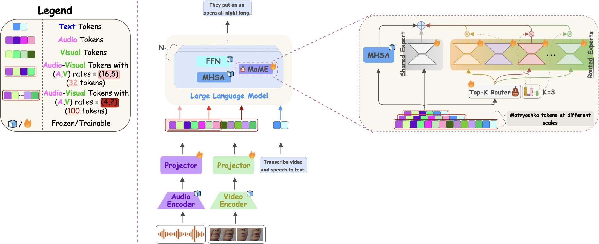
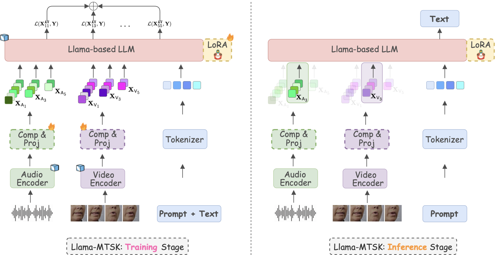
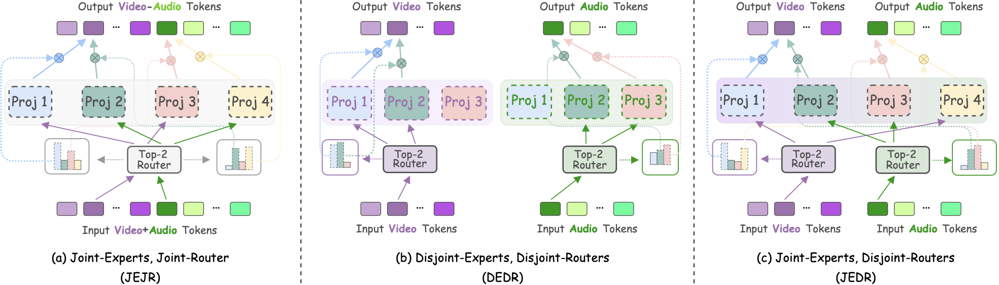
Scaling and Enhancing LLM-based AVSR: A Sparse Mixture of Projectors Approach
Interspeech 2025
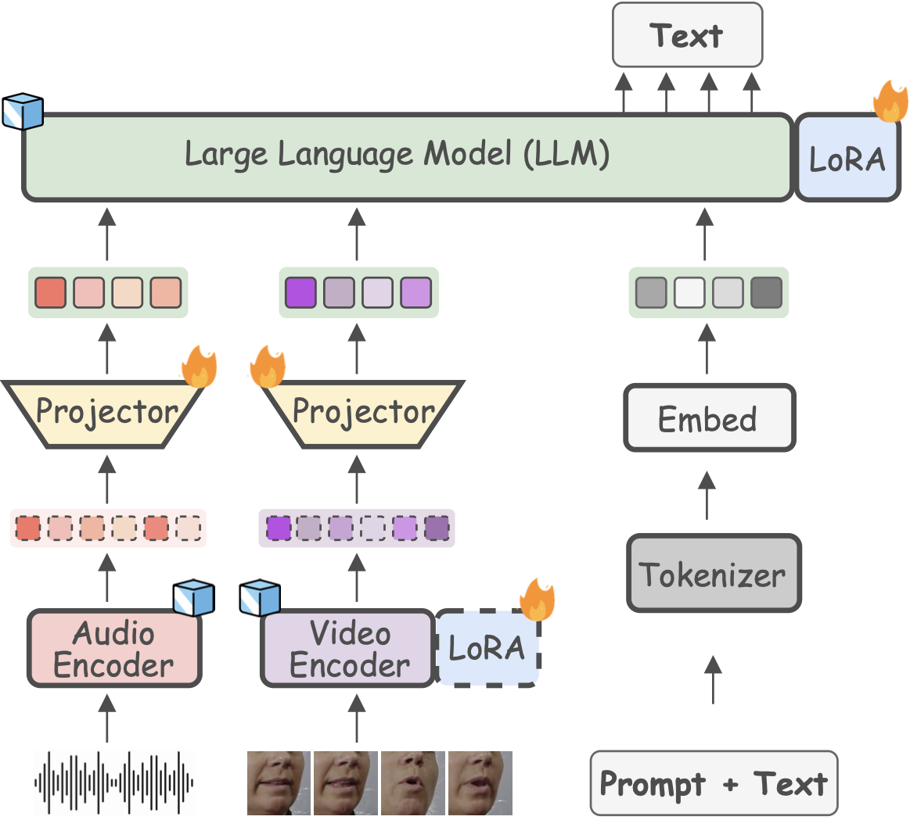
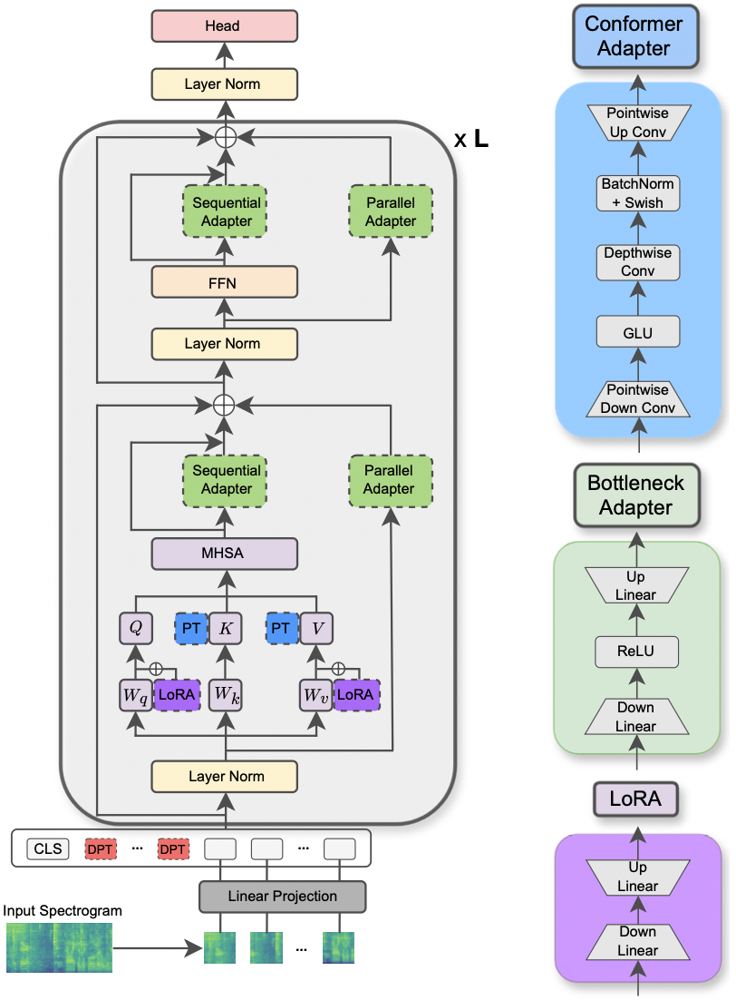
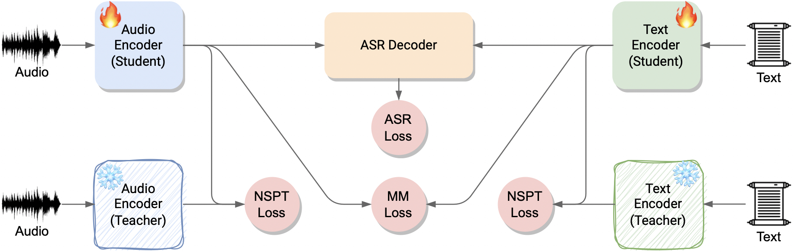
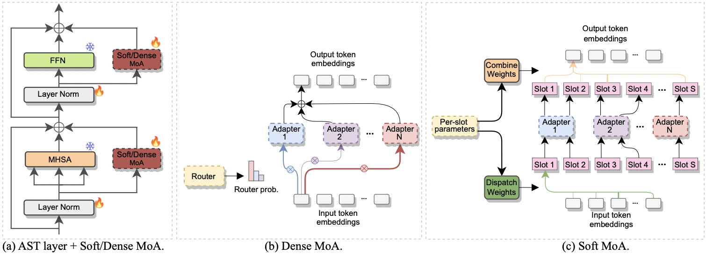
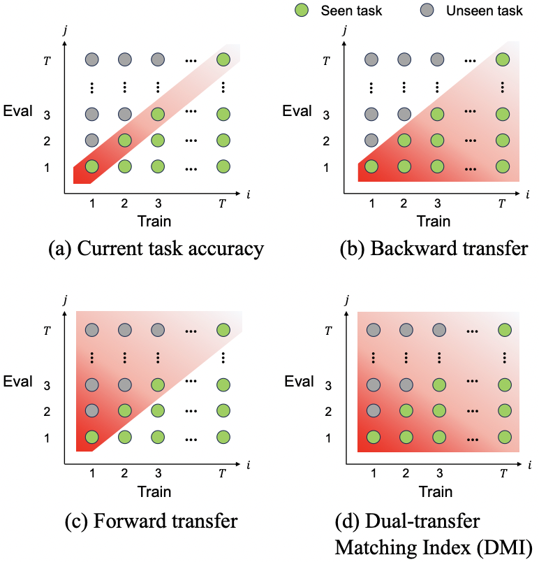
Evaluating and Improving Continual Learning in Spoken Language Understanding
Interspeech, 2024
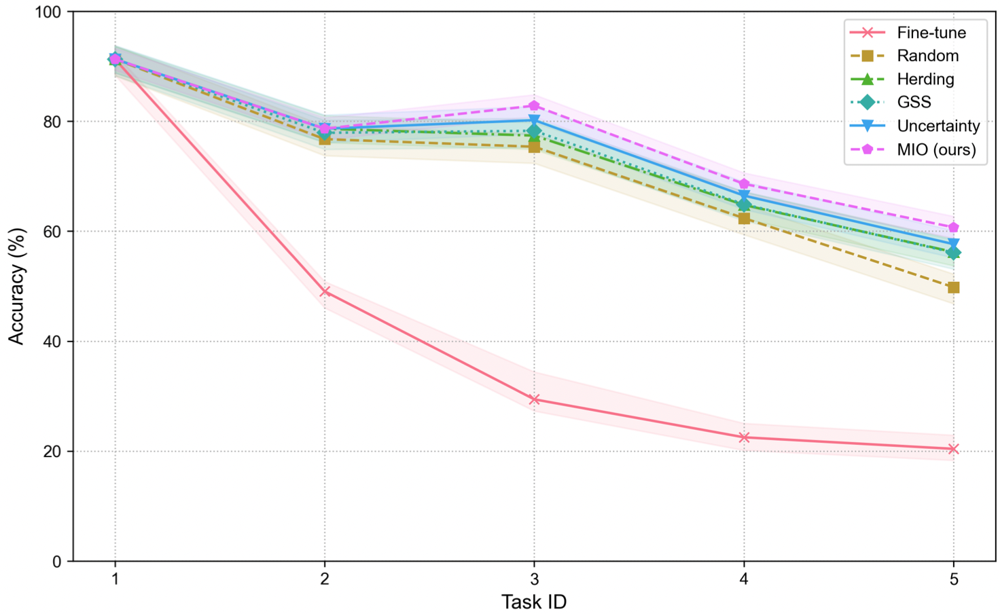
Improving continual learning of acoustic scene classification via mutual information optimization
ICASSP 2024
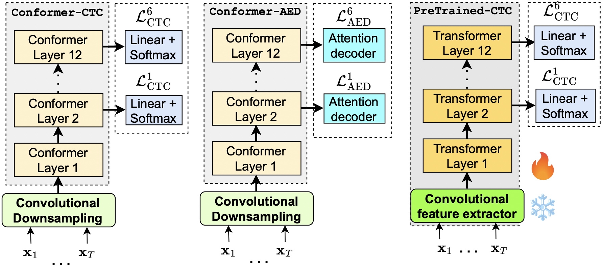
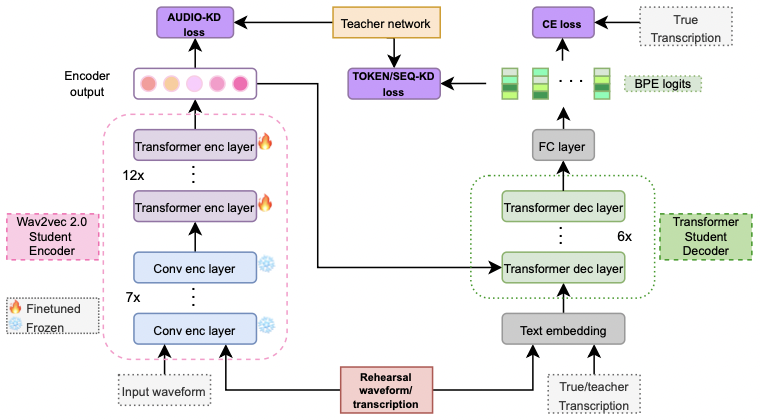

Work Experience
- 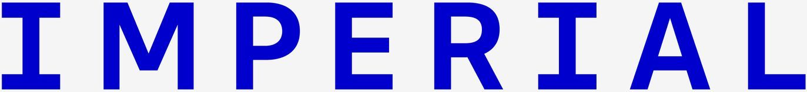
Research Associate in the iBUG group
Imperial College London, London, UK
Mar 2025-ongoing
Research interests: Efficient massive scaling of audio-visual models, Mixture of Experts, Multimodal LLMs
Advisor: Stavros Petridis
Education
 PhD in Information Engineering and Computer Science
PhD in Information Engineering and Computer Science
University of Trento, Trento, Italy
Nov 2021-Jan 2025
Title: Efficient Knowledge Transfer and Adaptation for Speech and Beyond
Supervisors: Daniele Falavigna, Alessio Brutti
-
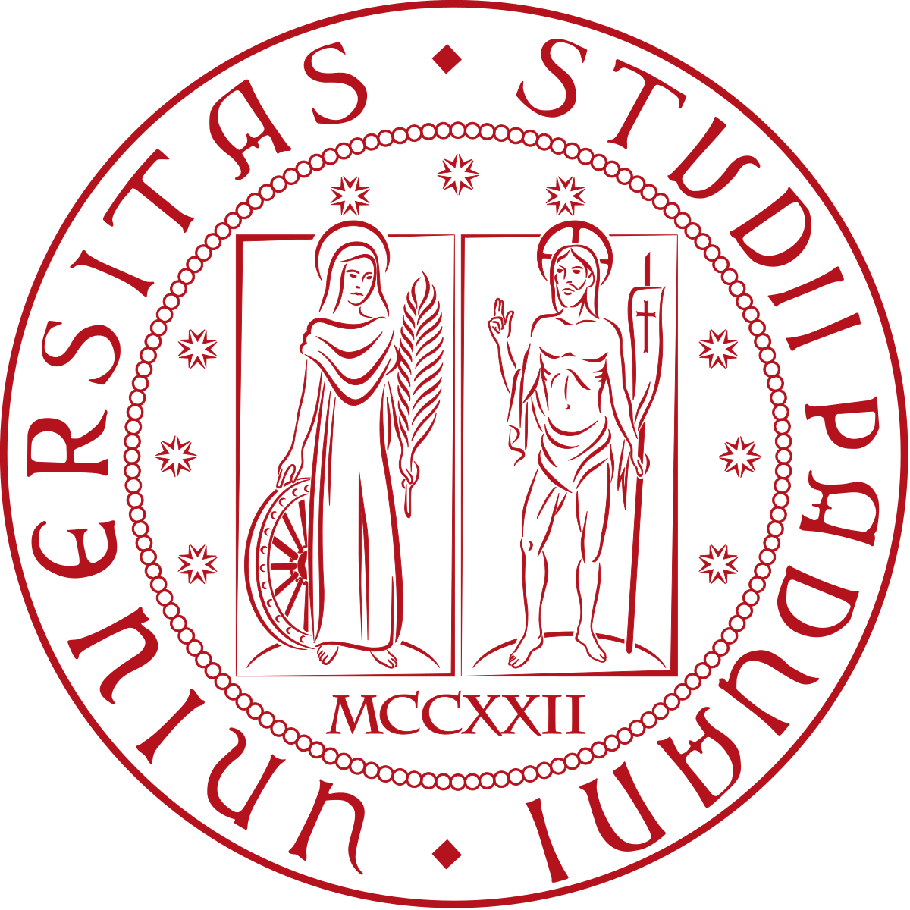
M.S. in Telecommunication Engineering
University of Padova, Padova, Italy
2016-2019
Thesis title: A Deep Learning-Based ECG Delineator: Evaluation and Comparison on Standard Databases.
Supervisors: Michele Rossi, Matteo Gadaleta -
B.S. in Information Engineering
University of Padova, Padova, Italy
2013-2016
Thesis title: Message Authentication over an Ideal or Noisy Channel
Supervisor: Nicola Laurenti